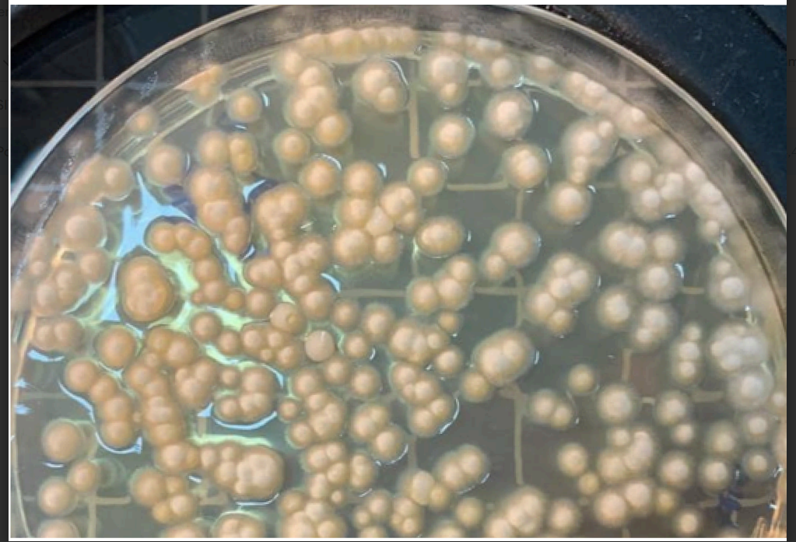

Solicitar orçamentoAlgumas características
- Viabilidade e concentração do microrganismo alvo.
- Quantificação e identificação de contaminantes.
- Teste de compatibilidade entre produtos biológicos e químicos.
Precisão científica
para resultados
confiáveis
Trabalhamos com rigor técnico e
metodologias avançadas para
garantir análises seguras e de
qualidade.
Valores
Que inspiram nossa empresa

Visão

Missão
Valores
Conheça nossos serviços
A MicroBIO foi fundada em 2018 com o propósito de apoiar a área da saúde por meio de análises microbiológicas de alta precisão. Desde o início, focamos exclusivamente em hospitais, secretarias de saúde e clientes corporativos, priorizando excelência técnica e confiabilidade.
Em 2019 e 2020, ampliamos nossa atuação para o setor ambiental e agrícola, oferecendo soluções em controle de qualidade e produtos biológicos. Passamos a atender agricultores e empresas especializadas com serviços como análise da água e de insumos à base de microrganismos.
Hoje, somos referência em inovação, ciência e sustentabilidade. Nosso compromisso é promover ambientes mais saudáveis e entregar mais do que resultados: cultivamos parcerias de confiança